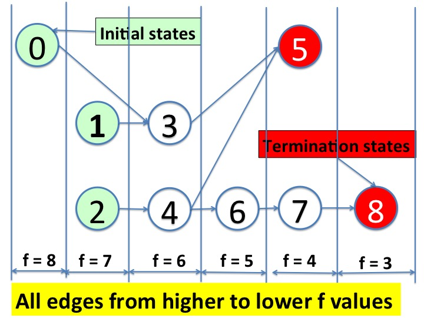

We use the term variant function, rather than loop variant,
because we will use the concept to prove properties of systems
that are not loops in programs. A variant function is a function
from states of a system to a well-founded set.
A
well-founded set
is a set on which we can carry out proofs by
induction. We prove progress of most algorithms by finding a
variant function from states to a set of integers which is bounded
below, and showing that state transitions decrease the value of
the function.
For a few problems we use a variant functions from states to tuples of
integers that are bounded below. We compare tuples
lexicographically. For example \((0, 1) < (1, 0)\).
Let \(f\) be a variant function. Then \(f = k\), for a constant
\(k\) is a predicate. The extension of this predicate is the set
of states \(s\) where \(f(s) = k\).
We prove that execution of a loop terminates by proving that the
execution of any command whose guard evaluates to True reduces the
value of a variant function \(f\).
If the execution of any command with a True guard reduces
\(f\) then every iteration
reduces
\(f\). Since \(f\) is bounded below, it cannot decrease for ever.
Therefore, at some point in the
computation all guards are False.
And, at that that point
execution of the loop terminates.
Variant Functions and Hoare Triples
Let \(I\) be an invariant
of the loop, let the \(j\)-th guarded command have guard
\(g_{j}\) and command \(c_{j}\), and let \(f\) be a variant function
of the loop. We prove that the execution of any command with
a True guard reduces the variant function by proving the
following Hoare triple for all \(j\):
Because \(I\) is an invariant it holds before every command is
executed. Since \(c_{j}\) is executed only if \(g_{j}\) holds, we
know that \(I \wedge g_{j}\) holds before \(c_{j}\) is
executed. We use this knowledge to show that execution of any
command reduces the variant function.
Variant Functions and Graphs
If there is a variant function \(f\) then
the state-transition graph has no cycles
because every edge of the graph is from a state with a higher
value of \(f\) to a state with a lower value.
The diagram below shows an acyclic graph with edges directed from
higher to lower \(f\) values.
A termination state (vertex) is one without outgoing edges.
The variant function tells us that the graph does not have paths with
an infinite number of hops; every path reaches a terminal state in a
finite number of steps.
>
Fig.1 - Variant Function decreases along every Edge
We will use variant functions to prove that distributed algorithms
progress towards their goals.
The concept of variant functions in sequential programming is a
central concept in reasoning about progress of distributed systems.